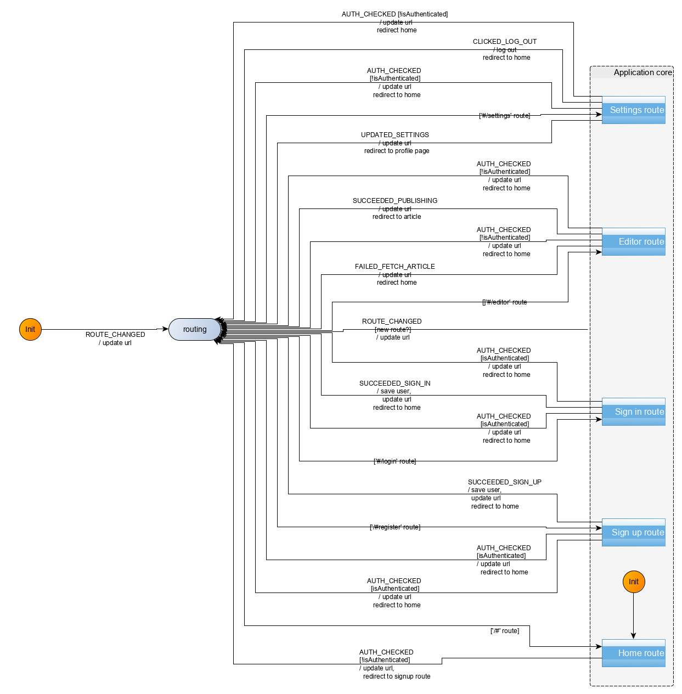
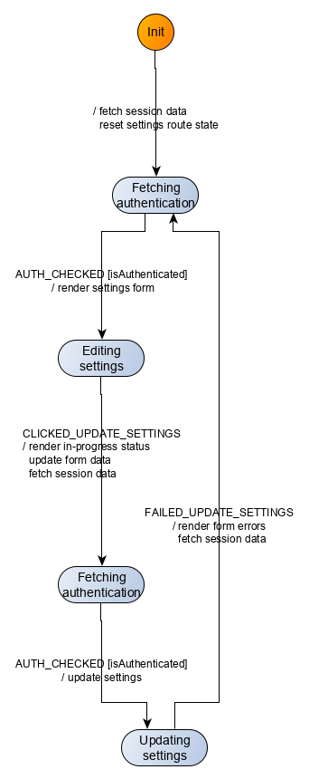

Settings route
In this section, we will modelize and implement the user flows related to the settings route. In that route, the user may:
- update his profile picture, username, biography, email, and password
- logout
The following rules apply:
- unauthenticated users navigating to the settings page should be redirected to the home route
- unauthenticated users cannot update a user’s settings. Any attempt to do so will trigger a redirection to the home route
- the form fields must be validated for the settings to be updated. Validation happens server-side with the API returns validation errors in the form of an object.
Events
We have the following events for the settings route:
| Event | Event data | Occurs when |
|---|---|---|
CLICKED_UPDATE_SETTINGS |
form data ({image, username, bio, email, password}) |
user submits the form |
FAILED_UPDATE_SETTINGS |
errors (as returned from the publishing API) | user submitted the form but the request failed |
UPDATED_SETTINGS |
user as returned by the API | user submitted the form and the request succeeded |
CLICKED_LOG_OUT |
none | user clicks on the log out button |
Additionally, the user may click on links (like home). However, this is not handled directly by the machine. Instead, this is handled by the browser as any other links, triggering a change of url, which then triggers a ROUTE_CHANGED event to the machine.
Commands
We have the following commands for the settings route:
| Command | Command parameters | Description |
|---|---|---|
UPDATE_SETTINGS |
form data({image, username, bio, email, password}) |
API call to update the user settings |
LOG_OUT |
none | deletes user authentication information |
UI
We already have identified the screens in the Specifications section. Ler’s remind them here:
| Route | State | Main screen |
|---|---|---|
#/settings |
Authenticated, settings |  |
#/settings |
Authenticated, settings |  |
The UI for the settings route will be implemented with a Settings Svelte component. The full source code for the Settings component can be accessed in the repository.
UI testing
As before, we test the UI with Storybook. The corresponding stories are available in the source repository.
Commands implementation
To implement the UPDATE_SETTINGS, we defer to the API. The LOG_OUT command only involves local operations, such as deleting user authentication information stored in local storage. The logic, as before is enclosed into functions passed as effect handlers (updateSettings, and removeUserSession):
[UPDATE_SETTINGS]: (dispatch, params, effectHandlers) => {
const {image, username, bio, email, password} = params;
const {updateSettings} = effectHandlers;
updateSettings({user: {image, username, bio, email, password}})
.then(({user}) => {
dispatch({[UPDATED_SETTINGS]: user});
})
.catch(({errors}) => {
dispatch({ [FAILED_UPDATE_SETTINGS]: errors });
})
},
[LOG_OUT]: (dispatch, params, effectHandlers) => {
const {removeUserSession} = effectHandlers;
removeUserSession();
},User scenarios test
We test four key user scenarios, checking the aforementioned behavior rules, the content of which should be clear from their identifiers in the code:
const userStories = [
[
UNAUTH_USER_ON_SETTINGS_IS_REDIRECTED,
UNAUTH_USER_ON_SETTINGS_IS_REDIRECTED_INPUTS,
UNAUTH_USER_ON_SETTINGS_IS_REDIRECTED_COMMANDS
],
[
AUTH_USER_ON_SETTINGS_UPDATES_SETTINGS,
AUTH_USER_ON_SETTINGS_UPDATES_SETTINGS_INPUTS,
AUTH_USER_ON_SETTINGS_UPDATES_SETTINGS_COMMANDS
],
[
AUTH_USER_ON_SETTINGS_FAILS_UPDATE_SETTINGS,
AUTH_USER_ON_SETTINGS_FAILS_UPDATE_SETTINGS_INPUTS,
AUTH_USER_ON_SETTINGS_FAILS_UPDATE_SETTINGS_COMMANDS
],
[
AUTH_USER_ON_SETTINGS_AND_LOGS_OUT,
AUTH_USER_ON_SETTINGS_AND_LOGS_OUT_INPUTS,
AUTH_USER_ON_SETTINGS_AND_LOGS_OUT_COMMANDS
]
];Behaviour modelization
The modelization we reach is the following:

Zooming in on the Editor route compound control state:

Refactoring
Remember than in the previous route (the Editor route), we identified a recurring pattern of behavior (authenticated form submission) which we abstracted in a function getAuthenticatedFormPageTransitions. We are going to use that function for our implementation, given that we again have the same pattern appearing for the Settings route.
We take advantage of our TDD refactoring stage to do a little bit of cleanup here and there in our Svelte UI code.
Behaviour implementation
The implementation (src/behaviour/editor.js) derives directly from the modelization. We reproduce here the main part which are the transitions:
export const settingsTransitions = [
{
from: "settings",
event: INIT_EVENT,
to: "fetching-authentication-settings-pre-form",
action: resetSettingsRouteStateAndFetchAuth
},
{ from: "settings", event: ROUTE_CHANGED, to: "routing", action: updateURL },
{ from: "editing-settings", event: CLICKED_LOG_OUT, to: "routing", action: logOutAndRedirectHome },
getAuthenticatedFormPageTransitions({
events: {
AUTH_CHECKED,
SUBMIT_TRIGGERED: CLICKED_UPDATE_SETTINGS,
FAILED_SUBMISSION: FAILED_UPDATE_SETTINGS,
SUCCEEDED_SUBMISSION: UPDATED_SETTINGS
},
states: {
fetchingAuthenticationPreForm: "fetching-authentication-settings-pre-form",
fetchingAuthenticationPreSubmit: "fetching-authentication-settings-pre-submit",
enteringData: "editing-settings",
fallback: "routing",
submitting: "updating-settings",
done: "routing"
},
isAuthenticatedGuard: isAuthenticated,
actionFactories: {
showInitializedForm: renderSettingsForm,
showSubmittingForm: fetchAuthenticationAndRenderInProgressAndUpdateFormData,
submit: updateSettings,
fallback: redirectToHome,
retry: renderSettingsFormWithErrorsAndFetchAuth,
finalize: updateUrlAndRedirectToProfilePage
}
})
].flat();Note how we use the transitions computed by the getAuthenticatedFormPageTransitions function.
Summary
We implemented the Settings route for our Conduit clone. Implementation was pretty straight forward and again exhibited an already seen pattern which we had previously extracted, and which we reused in the implementation. The Settings route did not have any controlled fields, which eliminated the considerations we had in the Editor route.